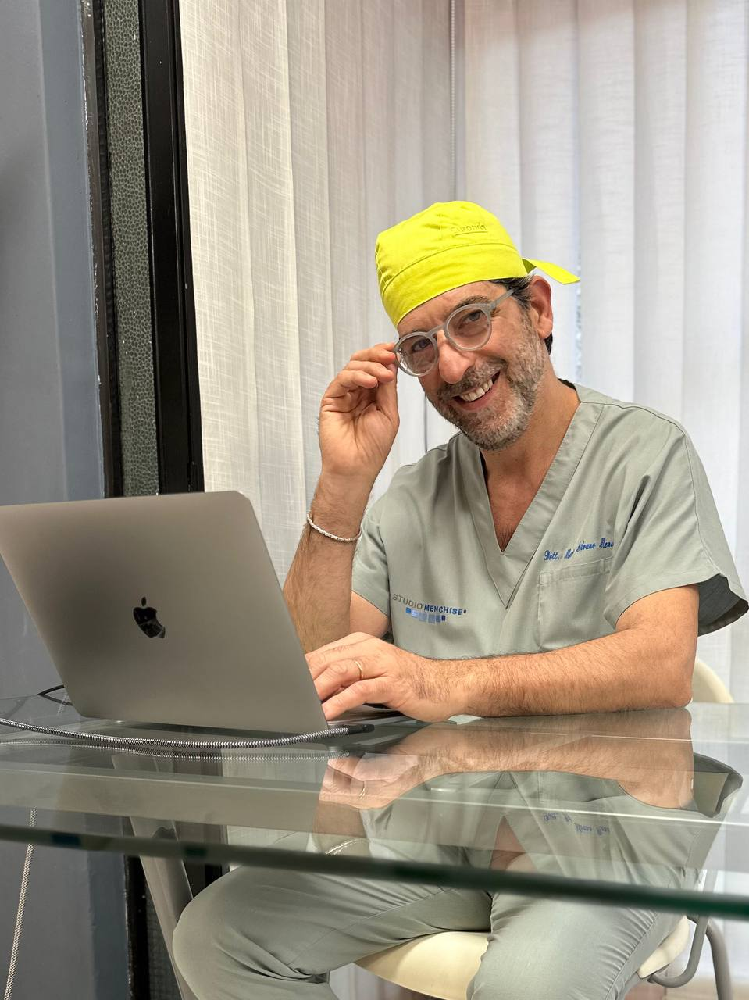
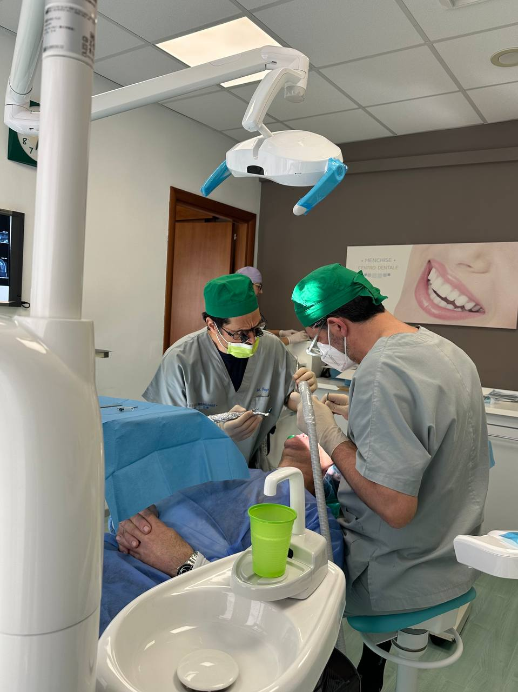
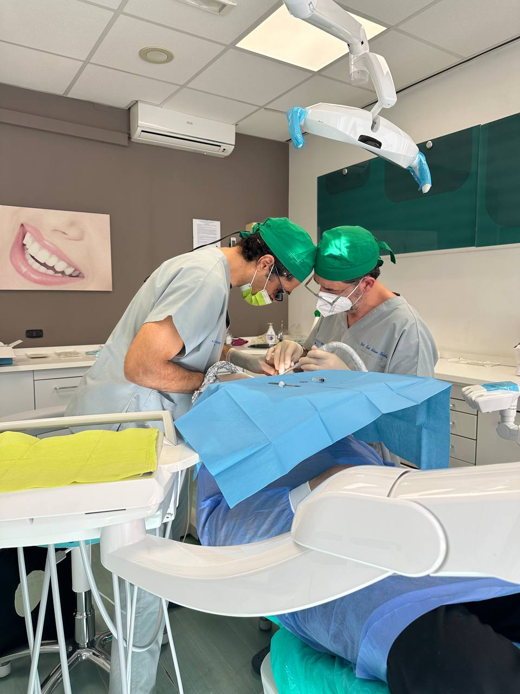
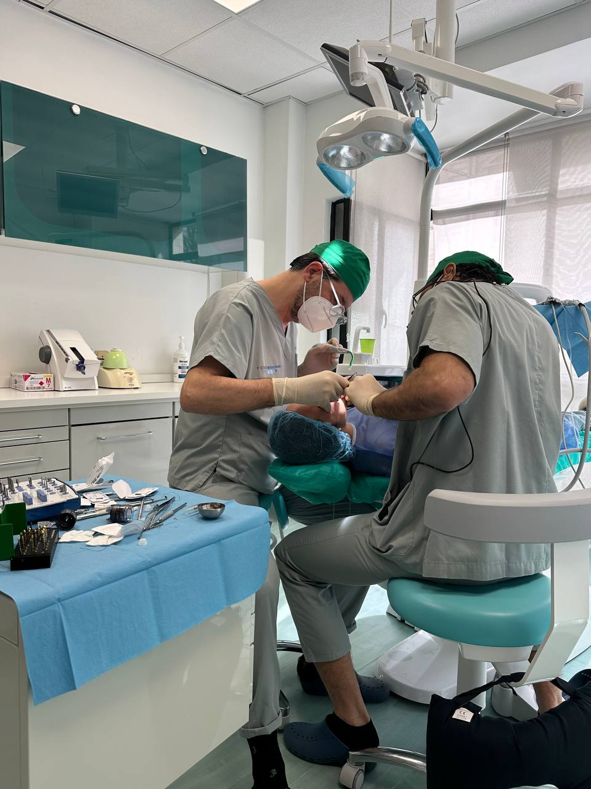
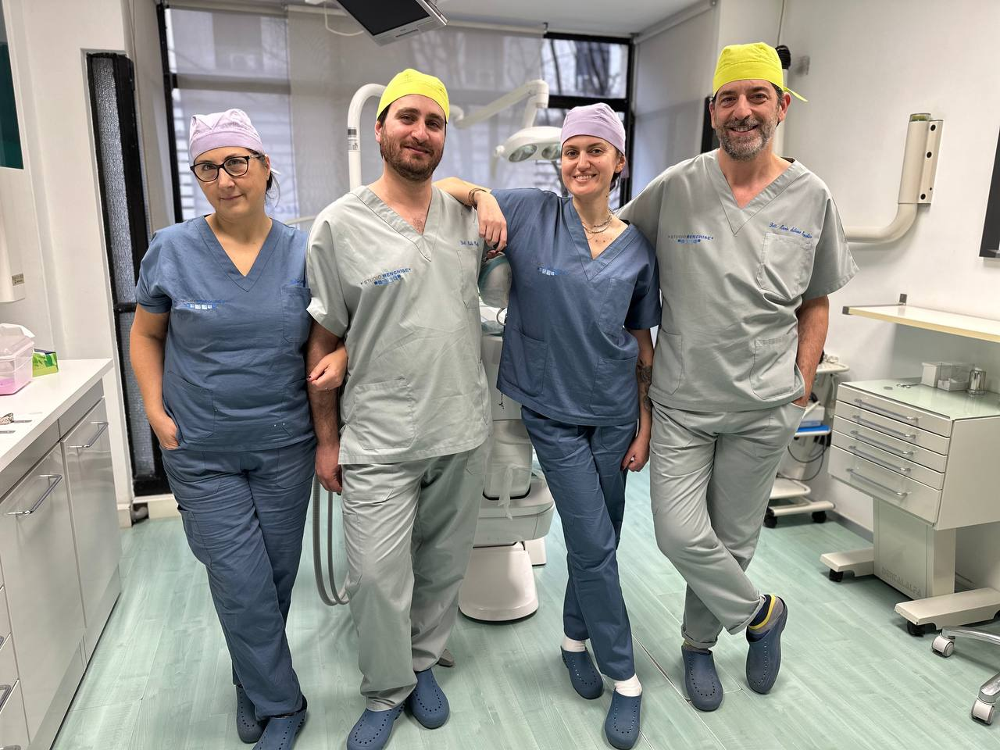
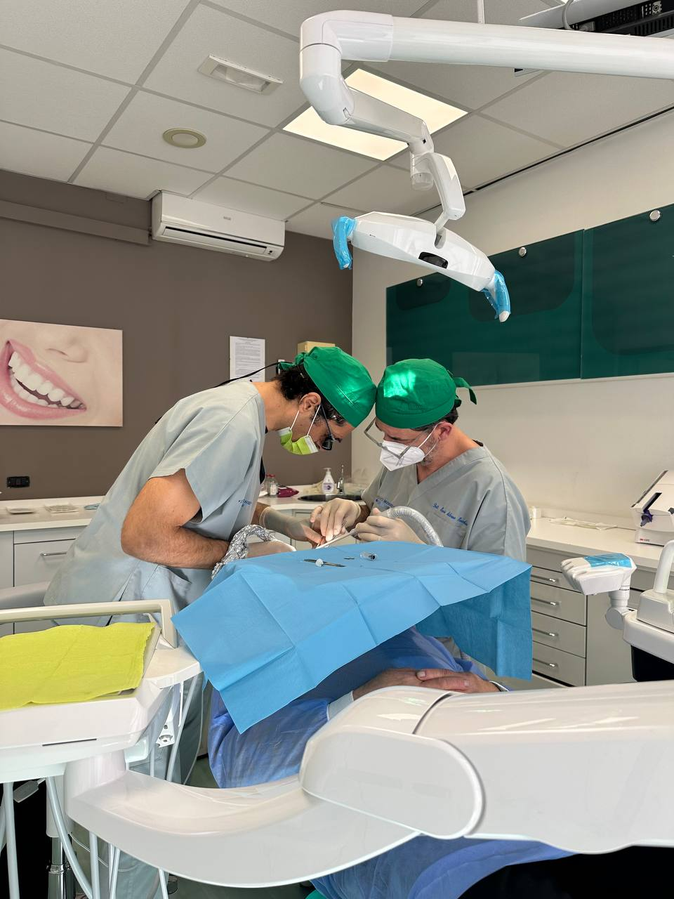
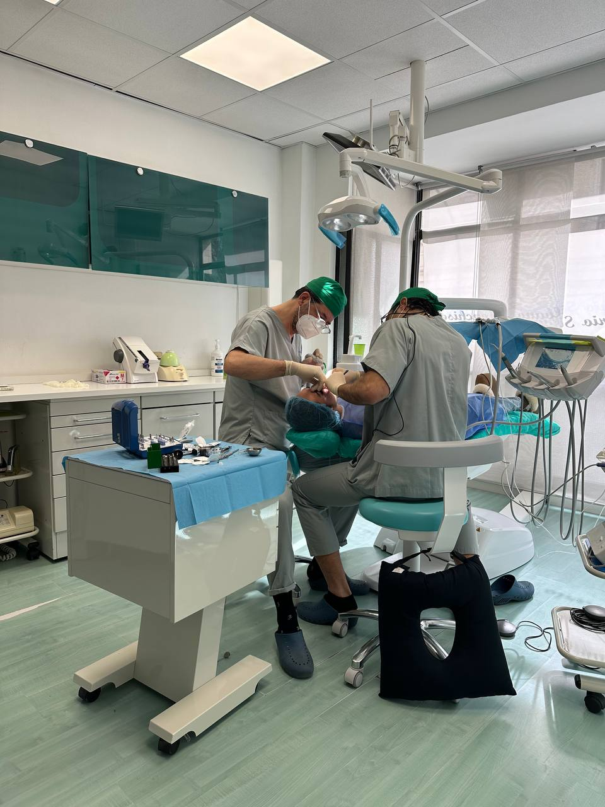
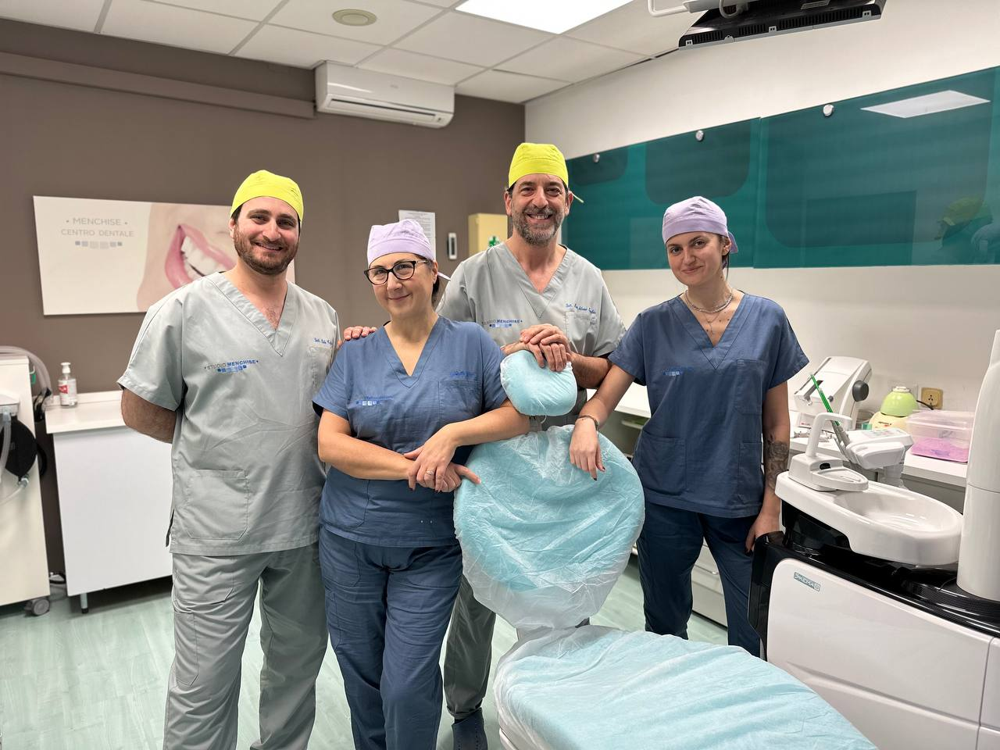
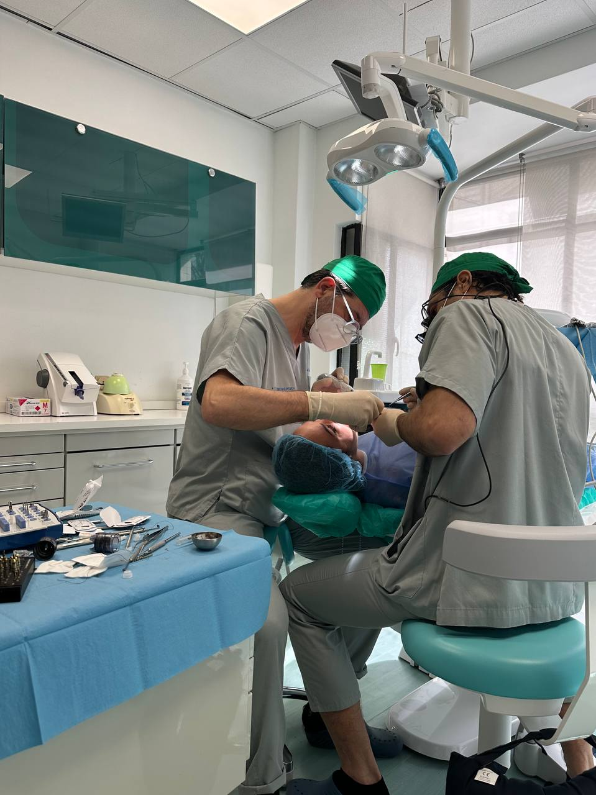

I Nostri Servizi
Igiene e Profilassi
Chirurgia
Conservativa

Radiologia
Descrizione del servizio di Radiologia.

Igiene e Profilassi
Detartrasi o ablazione del tartaro
Deplaquing: rimozione della placca con glicina
Deplaquing: rimozione della placca con air-flow (bicarbonato)
Remineralizzazione dello smalto con caseina
Remineralizzazione dello smalto con applicazioni di fluoro
Sbiancamento completo con lampada a LED
Sbiancamento completo con trattamento Laser
Fast bleaching: sbiancamento di mantenimento
Sbiancamento dente necrotico (a seduta)
Sigillatura solchi (terapia consigliata ai bambini che hanno appena terminato l’eruzione dei denti definitivi)
Terapia desensibilizzante a dente (terapia per denti sensibili)

Chirurgia
Estrazione
Chirurgia parodontale
Apicectomia
Chirurgia implantare
Chirurgia implantare all-on-four oppure all-on six (grandi riabilitazioni per bocche edentule)
Chirurgia di rigenerazione ossea (rigenerazione ossea necessaria per il posizionamento di impianti ossei quando si è in assenza di osso)

Conservativa Diretta
Ricostruzione estetica (composito)
Ricostruzione estetica elementi frontali
Ricostruzione cervicale in composito
Rilocazione margine in composito

Conservativa Indiretta
Intarsio in composito
Intarsio in disilicato di litio
Intarsio in ceramica
Intarsio in oro (ormai in disuso)

Terapia Canalare o Devitalizzazioni
Terapia canalare un canale (una radice)
Terapia canalare due canali (due radici)
Terapia canalare due canali (due radici)
Ritrattamento terapia canalare un canale (una radice)
Ritrattamento terapia canalare due canali (due radici)
Ritrattamento terapia canalare tre canali (tre radici)
Protesi Fissa
Elemento provvisorio in resina semplice
Elemento provvisorio armato
Elemento provvisorio su impianto
Elemento in metallo/ceramica (anche su impianto osseo)
Elemento in zirconio-ceramica (anche su impianto osseo)
Elemento in disilicato di litio (anche su impianto osseo)
Elemento in zirconio monolitico (anche su impianto osseo)
Elemento in ceramica integrale (prevalentemente per la riabilitazione dei frontali)
Faccetta in zirconio-ceramica (per i denti frontali)
Faccetta in ceramica integrale (per i denti frontali)

Protesi Mobile
Protesi mobile provvisoria resina e ganci
Protesi mobile parziale superiore o inferiore
Protesi mobile totale superiore o inferiore
Protesi mobile scheletrata
Ribasamento protesi mobile

Ortodonzia
Ortodonzia intercettiva
Ortodonzia mobile
Ortodonzia fissa
Ortodonzia invisibile
Bite finale di contenzione
Bite gnatologico
Bite per bruxismo

Parodontologia
Descrizione del servizio di Parodontologia.